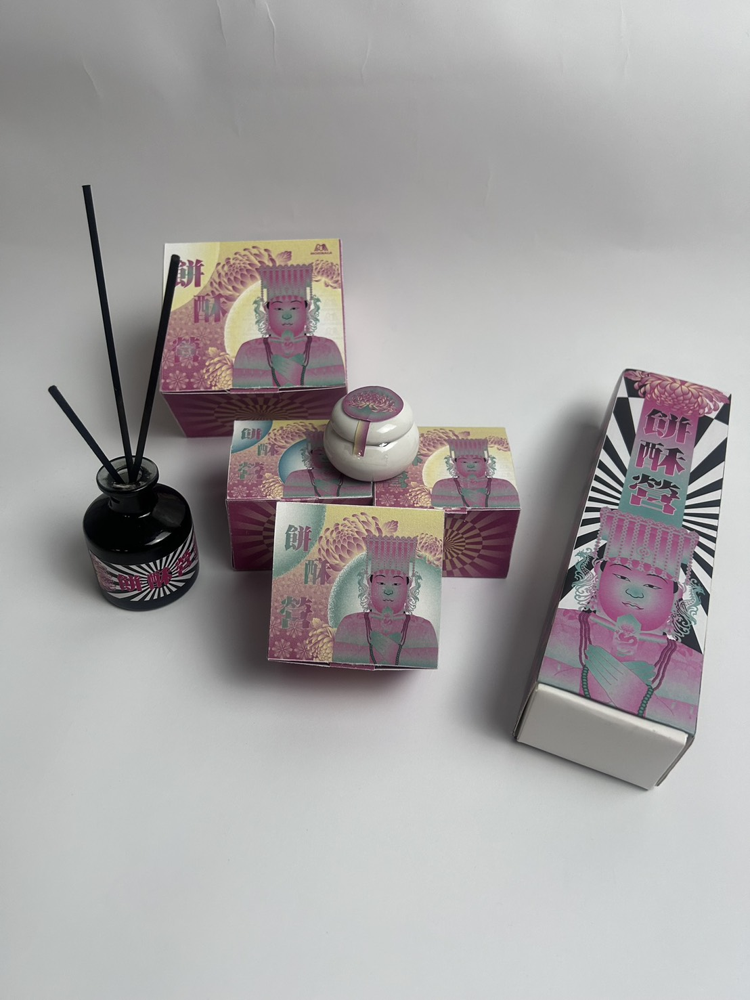
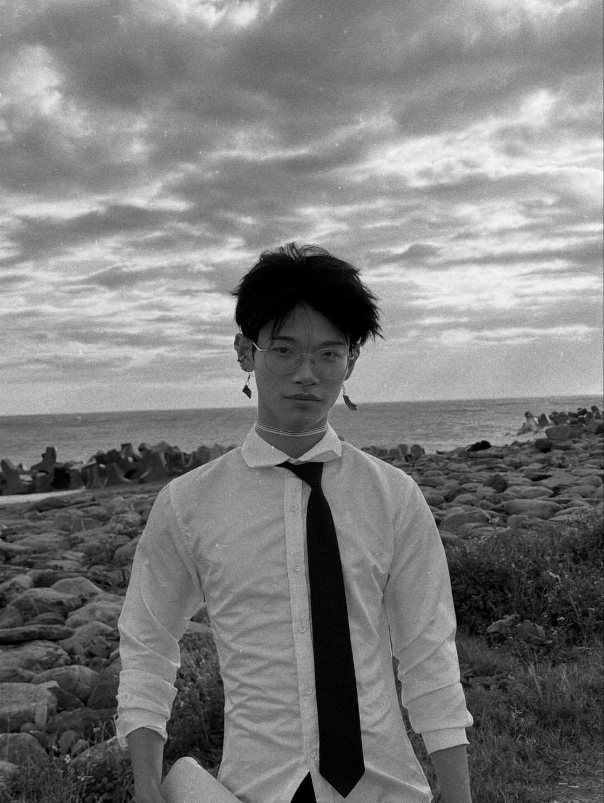
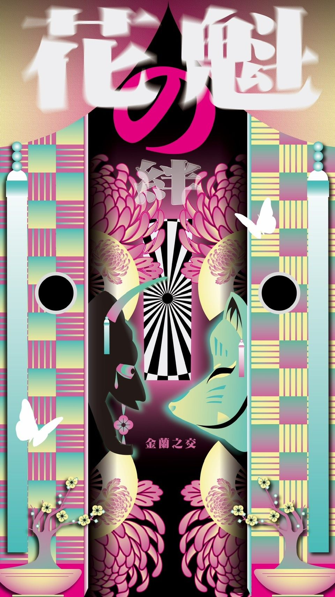
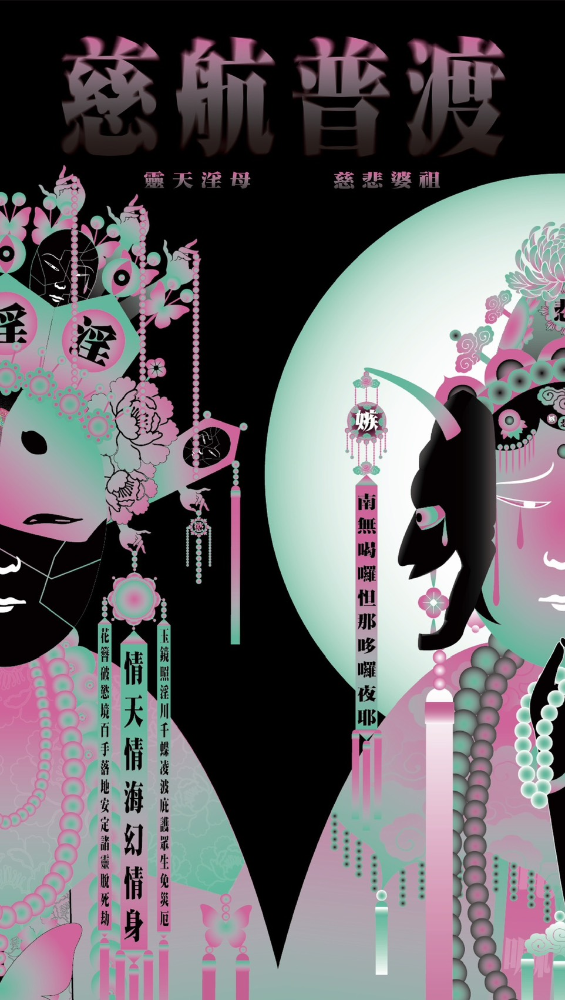

BRAND / PACKAGING
餅酥營
以傳統文化為靈感的品牌包裝設計，將民俗意象轉化為當代視覺。
01
01 / ABOUT ME
我在視覺裡，
尋找傳統的新表情。
就讀視覺傳達設計，喜歡傳統文化，也對信仰意象如何走進當代保持好奇。
對我來說，設計不是複製古老符號，而是重新觀看、重新組合，讓熟悉的文化在新的畫面裡再次發聲。
02 / SKILLS
不以數字定義擅長，
而以每一次的視覺選擇表達。
目前分享的專長 ✳ 其他技能與工具，之後再慢慢補上。
03 / SELECTED WORKS
從包裝到信仰圖像，
以不同形式回望傳統。

以傳統文化為靈感的品牌包裝設計，將民俗意象轉化為當代視覺。
01
為自己與朋友的和服拍攝構想一場幻想，以角色與色彩描繪想像中的場景。
02
自創神明形象，嘗試融合道教與日本文化的視覺線索。
03※ 作品名稱為本頁編排用標題；作品圖皆來自專案資料夾。
04 / INTERESTS
喜歡傳統文化裡豐富的象徵、色彩與故事。越是熟悉的符號，越值得換個角度再看一次。
「舊的意象，
也可以有新的觀看方式。」
05 / CONTACT
感謝你翻閱這本小小的個人誌。
期待下一次，在作品裡相遇。
聯絡資訊尚未公開